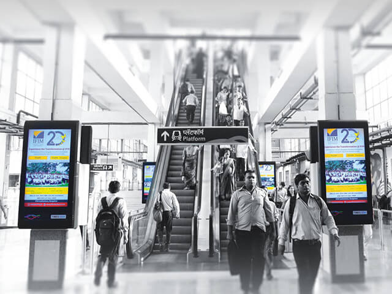
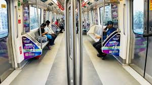

Metro branding has emerged as a unique and powerful business avenue,
connecting the rapidly growing city of India with a diverse population.
With its extensive reach and high footfall, the Noida Metro offers
businesses a rare opportunity to connect with a wide range of consumers.
By partnering with a Noida Metro ad services agency,
companies can strategically promote their products and services to a
diverse audience, ensuring broad brand exposure.
•Dynamic digital displays, such as high-definition screens that play engaging video or interactive
touchscreens that allow users to interact with the content, are attention-grabbing and effectively
capture the Audience's interest.
•Eye-catching posters are placed all over the metro.
•Interactive installations, such as touch-sensitive screens that provide information or games that
commuters can play while waiting, directly engage with the Audience, making the advertising
experience more memorable.
•Companies can formulate a message that fits the commuting needs of locals.
•Partnerships form stronger bonds in the community by placing the product where consumers.
•Local knowledge makes campaigns relevant and effective.
Want to use Metro Branding for brand Promotions?
Benefits of metro branding in Noida
Metro branding in Bangalore has been one of the most critical marketing strategies companies have used to increase visibility in a rapidly urbanizing region over the last few decades. This exclusive platform will help businesses develop advertising campaigns that resonate with the various demographics.
This article explains the significant advantages of Noida Metro branding and its importance for companies looking for an effective marketing strategy.
Importance of metro branding in Noida
In Noida, metro branding has become an important marketing strategy, transforming the city's public transportation into an effective advertising platform. With such a broad reach and diversified audiences, branding in Noida Metro provides a fantastic opportunity for businesses to reach customers. Not only is this form of advertising cost-effective,
but it also provides avenues for brand engagement with captive audiences. Five critical points stand out on why metro branding in Noida is essential.
Ads Formats for metro branding in Noida
Noida's metro branding has the advantage of being a channel through which businesses may reach diverse crowds. It offers a unique platform as a city celebrated for its tech hub and vibrant culture. It is an avenue by which brands connect with commuters who travel daily through the Metro.
The following are the practical ad formats businesses can use for visibility and impact marketing within the Noida Metro.


Why Choose Pooja Movie Creations for Metro Branding in Noida?
The urban marketing dynamic offers a unique opportunity with the Noida Metro, offering diverse audiences for branding purposes. At Pooja Movie Creations, strategic placement and creative messaging are essential in this cosmopolitan city. As one of the leading Metro Advertising Companies in Noida, we offer comprehensive solutions to fulfil the various requirements of companies
that want to make an impact. Here are seven compelling reasons why you should choose us for your Metro branding needs in Noida.
Other advertising services available in Noida
Ready to talk with a marketing expert?
Copyright 2008-2021| All rights reserved | Pooja Movie Creations Group